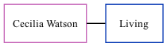

Cecilia Watson, the wife of Brian John Cowell (the second cousin once-removed on the mother's side of Nigel Horne), and married Brian in Canterbury, Kent, England around May 19971 (Apr/May/Jun).
Citations
England & Wales Marriages 1837-2005 - Findmypast
Family Tree

Generated by ged2site. Last updated on Nov 13, 2024